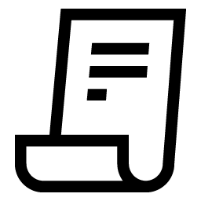

Themeable, Extendable, Modular
Content Management
An open source MongoDB, Node.js and Express solution
For digital publishing, e-commerce and mobile
get started

-
Developers
100% Open Source, Un-opininated, Modular, Themable, Extendable, Built on Express, Node.js and MongoDB
 -
Designers
100% Open Source, Un-opininated, Modular, Themable, Extendable, Built on Express, Node.js and MongoDB
-

Publishers
100% Open Source, Un-opininated, Modular, Themable, Extendable, Built on Express, Node.js and MongoDB
-
Producers
100% Open Source, Un-opininated, Modular, Themable, Extendable, Built on Express, Node.js and MongoDB
-
Editors
100% Open Source, Un-opininated, Modular, Themable, Extendable, Built on Express, Node.js and MongoDB
-
Enterprise
100% Open Source, Un-opininated, Modular, Themable, Extendable, Built on Express, Node.js and MongoDB
What's inside
Traditional Content Management Frameworks are large, bloated and obtuse.
Periodic is built 'the node way'. Keep ideas simple and compose big ideas from many smaller ones. Periodic is designed to replace micro content management solutions like Wordpress or Drupal, large enterprise content management solutions like CQ5 and Teamsite and content management/e-commerce platforms like magento.
Controllers, Routes and Extensions are node modules, themes are customizable express views. The process to create and distribute new themes and extensions is easy and straightfoward, read more about extending Periodic with Node.js Modules in the documentation.

Configuration, Themes, Extensions

PM2, Express, Node.js

MongoDB
Contribute your own Themes & Extensions
"That is true, gentlemen," added John Sullivan. "Only eighty days, now that the section between Rothal and Allahabad, on the Great Indian Peninsula Railway, has been opened. Here is the estimate made by the Daily Telegraph:
Hack & Fork
"That is true, gentlemen," added John Sullivan. "Only eighty days, now that the section between Rothal and Allahabad, on the Great Indian Peninsula Railway, has been opened. Here is the estimate made by the Daily Telegraph: